← 返回阅读库 · 原论文目录
论文讲解阅读文档 · 新模型 · v067
MobileNets Efficient CNN for Mobile Vision Applications[1704.04861]
视频时长 00:06:01；讲解文字 2,706 字符；提取讲解画面 14 张。按视频原顺序阅读，每段文字保留时间戳。
文字来自整段视频的自动语音转写，按自然停顿分段，并与 PPT / 论文页面 / 演示画面对齐。未将讲解压缩为摘要；术语、数字和口述公式请结合画面及原论文核对。 阅读稿已校正规范部分明确术语误识别；原始逐字稿和每处修改记录另行保留。
讲解画面为源视频截图（640×360），不是可编辑 PPT 文件。全片按每秒 2 帧扫描内容变化，逐步展开页保留；连续动画保留代表画面。清晰度受源视频限制。
下载完整资料包 · 含离线 HTML、PDF、Word、全部 PPT 画面和字幕。
原论文与材料
MobileNets: Efficient Convolutional Neural Networks for Mobile Vision Applications · 下载完整 PDF（9 页）
按时间阅读
00:00:00–00:00:22 · 画面 001
 00:00:00–00:00:22 · 画面 001
00:00:00–00:00:22 · 画面 001大家好，今天我们来介绍 MobileNets: Efficient Convolutional Neural Networks for Mobile Vision Applications。那么你从标题可以看出来，它是一个为了移动端服务的这么一个高效的网络。那么我们重点就要关注如何把原来一个很庞大的网络给它做的轻量化，让它能够放在移动端嵌入式的平台上能够运行。那么本文的方法其实是非常直接的，既然我原始的 CNN 里面里面最多的最耗时的就是卷积运算
00:00:22–00:02:22 · 画面 002
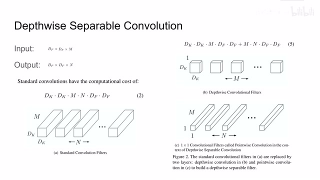
00:00:22–00:02:22 · 画面 002我有没有办法把里面的卷积给它优化一下呢？那么这里提出做了使用一个 depthwise separable convolution。我们下面就来看它具体是怎么实现的。那么假设我们的一层卷积层，它的输入是 df 乘 df 这么一个 resolution，然后乘上 m 个 channel，它的输出是 dfdf 乘上 n 个 channel。那么假如我们的 kernel 的尺寸是 dk 乘 dk那么如果我们要做一个标准的卷积运算，它的计算复杂度呢就是 dk 乘 dk 乘以 m，就是我的卷积核和 m 个通道它要输出 n 个 filters n 个 channel。那么每一个 channel 的大小呢是 df 乘 df。那么这个呢就是我们一个标准的卷积操作它需要的运算量。那么作者想，你这样搞确实不错，卷积嘛，你有 m 个 channel 嘛，取出一个 dk 乘 dk 的 patch 这么一个立方体的数据
它们组合在一起做卷积就有点天地交而万物通，上下交而其之同这种感觉。但是呢，你仔细一想，我们为了计算卷积输出的一个值真的需要把这个 dk 乘 dk 乘 m 这些数统一起来一起来计算吗？那么这里呢，作者就利用了一个卷积的性质把它做了一个拆分。那么一个标准的卷积操作呢就被作者拆成了 depthwise convolution 和这个 1 by 1 的 convolution。那么我们先看这个 1 by 1 channel 它是好理解的假如说我们有 M 个 channel，我只计算这一个像素这一长条，相当于把 M 个 channel 相同位置上的数值提出来作为我们的输入。那么这样就能保证我们各个 channel 之间相互的数据能够交通。那么与之相对的，我每一个 channel 里面局部的像素我们也希望它们能够沟通。这里作者就在使用了一个 depth-wise convolutional filter
这个 filter 呢，它的 channel 是 1，也就是说我一次只关注一个 channel 内像素的信息。那么在这个 channel 内选择 dk 乘 dk 这么一个临近的区域，把这个相邻的区域的里面的像素呢，它们关联起来。假如说我不断的重复这个 depthwise convolution 和这个 1x1 的 convolution，那么理论上呢，我就可以用这两个 convolution 把它们的组合来替代这么一个标准的 convolution
00:02:22–00:02:44 · 画面 003
00:02:22–00:02:44 · 画面 00300:02:44–00:02:45 · 画面 004
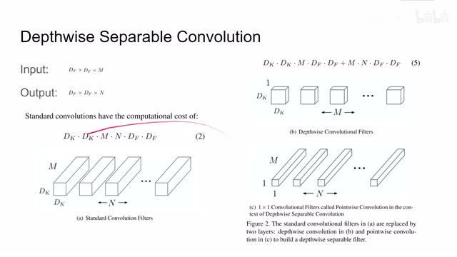
00:02:44–00:02:45 · 画面 00400:02:45–00:03:24 · 画面 005
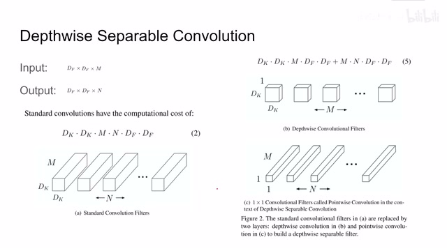
00:02:45–00:03:24 · 画面 005它就像你在十字路口以东西交通，南北交通，只要你红绿灯变化的快，它和大家一起交通有什么区别呢？比没有红绿灯还通畅。那么这样的替代的好处呢是显而易见的。我们看到计算这个 Depthwise Convolution 的 filter 呢，现在呢我们因为只计算了一个通道，那么它的输入呢就是 DK 乘 DK，我们要输出 M 个通道，每个通道的尺寸呢是 DF 乘 DF。这个呢是 Depthwise Convolution 智能它的计算量那么再看下面的 1×1 的 convolution，因为我们一次只计算一个像素点，那么就相当于 1 乘 1 乘 m 个输入。那么我们最后想要输出 n 个 channel 总算 n 每个 channel 的大小是 df 乘 df。那么即便把这两个 convolution 加起来，你发现它的计算量也是小于它的。那么我们具体来看作者怎么样定义的一个标准的网络，左侧是我们一个标准的 3 乘 3 的卷积过了 batch normalization 加了一个 ReLU 激活函数
00:03:24–00:03:25 · 画面 006
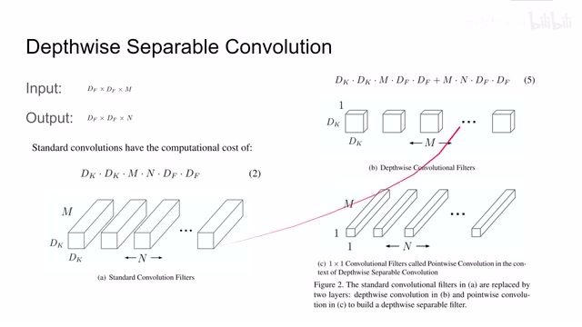
00:03:24–00:03:25 · 画面 00600:03:25–00:03:37 · 画面 007
00:03:25–00:03:37 · 画面 00700:03:37–00:04:27 · 画面 008
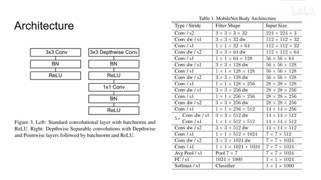
00:03:37–00:04:27 · 画面 008那么经过拆分呢它变成了一个 3 乘 3 的 Depthwise Convolution、Batch Normalization、ReLU 再接一个 1 乘 1 的 Convolution、Batch Normalization、ReLU 这样呢就是把原来一个标准的卷积操作拆成了两个卷积的操作你虽然看它层数增加了但是它的计算量呢却减少了那么这边呢是作者的一个 MobileNet 的详细的网络结构我们可以看到一开始这层它做了一个普通的卷积但是到后面呢它就开始这个 Depthwise 和这个 1x1
来相互组合，这种组合呢就不断的持续下去，最后 Average Pooling 加 Fully Connected Layer Softmax 这个思路很简单很直接，而且理论上原来任何的卷积层都可以换成这两种卷积的组合。那么除此之外呢，作者们还表示，有的时候我移动端并不需要这么强大的网络的性能，那怎么办呢？我们可以把这个网络它的宽度继续的削减，也就是 Channel 的数量给它减少。
00:04:27–00:04:56 · 画面 009
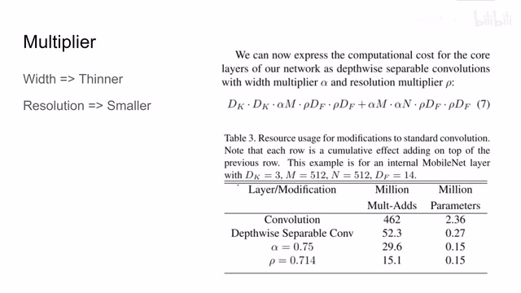
00:04:27–00:04:56 · 画面 009同时网络的分辨率给它变小，也就是说我们输入图像的分辨率给它变小。那么经过这一系列操作，我们可以看到这边大幅度的减少了乘法加法的运算量。那么 MobileNet 你这样做简化代价是什么呢？这里作者汇报了在 ImageNet 上把原来的 Convolutional Network 变成了 MobileNet，它识别的准确率大概下降了 1.1%那么在这个表格里面。
00:04:56–00:05:20 · 画面 010
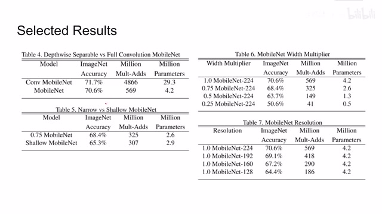
00:04:56–00:05:20 · 画面 010这个配置是把我们的网络变窄了，就是 channel 的数量减少了。那么这个配置是移去了网络中的几层，是我们的网络变得更浅了。可以看到把 channel 数量减少一点损失的性能相对较小一点。那么这边作者还讨论了我们的宽度究竟能减少到多少，我们的 resolution 究竟能缩到多少？那么具体的你可以看到这里的实验结果。那么此外作者还在论文中讨论了。
00:05:20–00:05:21 · 画面 011
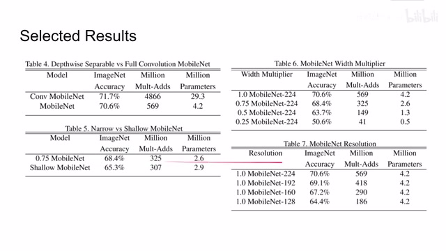
00:05:20–00:05:21 · 画面 01100:05:21–00:05:28 · 画面 012
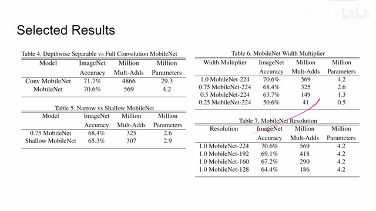
00:05:21–00:05:28 · 画面 01200:05:28–00:06:01 · 画面 013
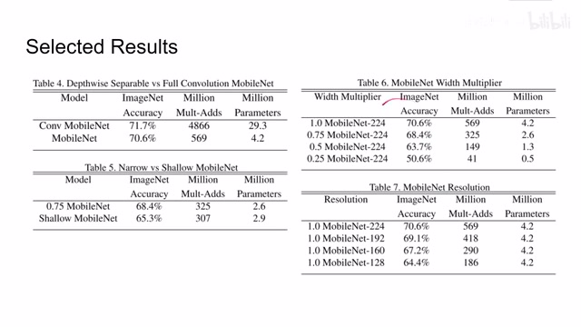
00:05:28–00:06:01 · 画面 013我模型收缩之后，我的 hyper parameter 应该怎么调整？然后呢，包括也汇报了一些后续的其他的下游任务，如果你感兴趣的话非常推荐你去原文查看。好的，那么以上呢就是我对这篇论文的简单的分析。那么正如有的朋友所知道的，这个呢是 mobile net 最初的版本。那么我们后续很快就会更新 MobileNet V2、V3 还有基于 mobile net 实现的 efficient net。那么感谢您的收看，再见。
00:06:01–00:06:01 · 画面 014
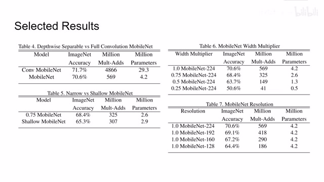
00:06:01–00:06:01 · 画面 014转写与来源说明 · 0 个自动复核提示
保留 13 个原始语音片段，0 个片段触发自动复核提示。提示仅用于定位可能的术语、重复或识别问题，不等于已确认错误。
讲解画面为源视频截图（640×360），不是可编辑 PPT 文件。全片按每秒 2 帧扫描内容变化，逐步展开页保留；连续动画保留代表画面。清晰度受源视频限制。
原视频：paper/合集_2026-10-16_新模型/[论文简析]MobileNets Efficient CNN for Mobile Vision Applications[1704.04861].mp4
SHA-256：7fbbe68c51e53b65128c1cbcd5e2eb0dfe24def7bad9ea0c3d8f7b79f2b330c7
全文按视频语音与画面制作。原论文可从上方链接下载；完整资料包保留全文、原始逐字稿、字幕和校对记录。